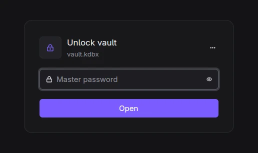
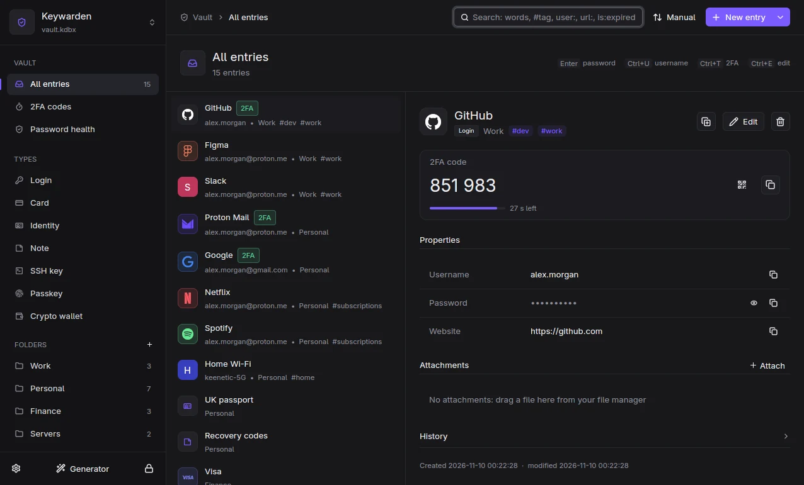
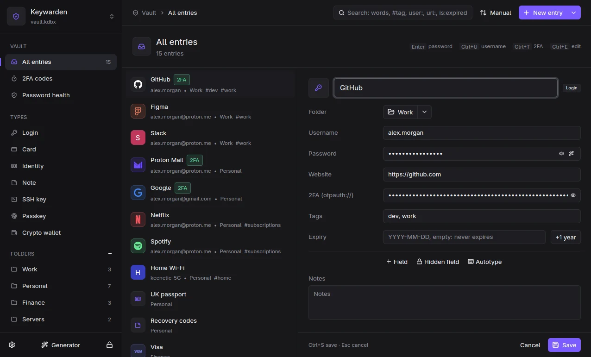
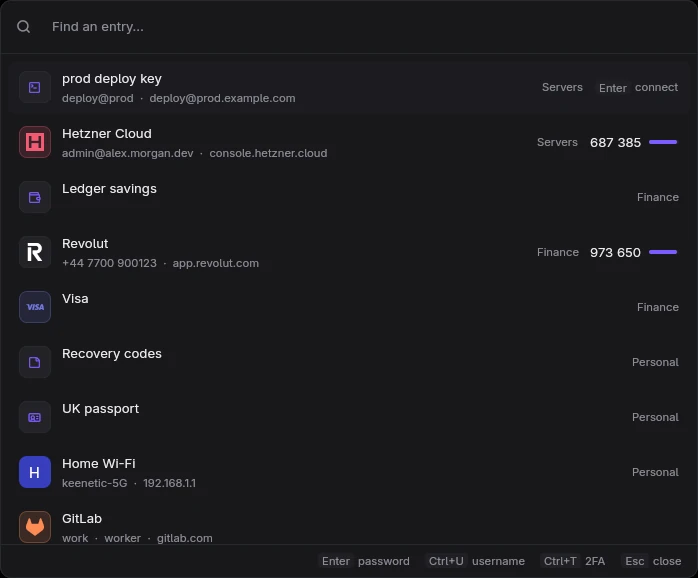
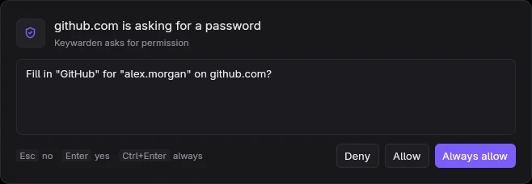
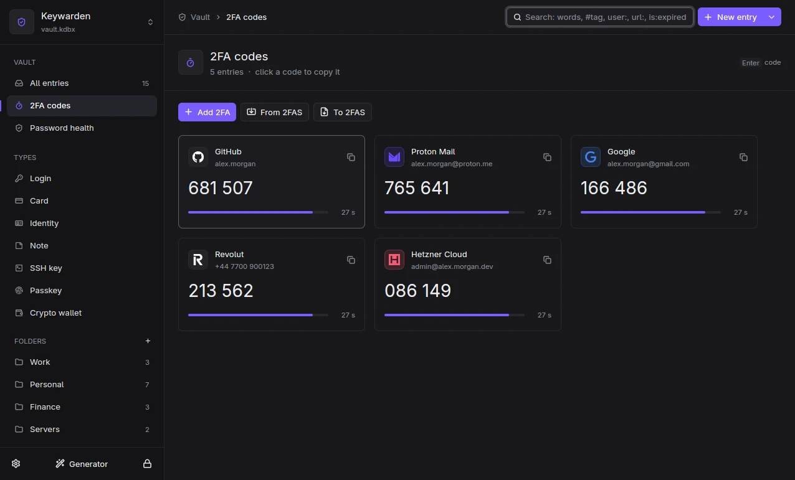
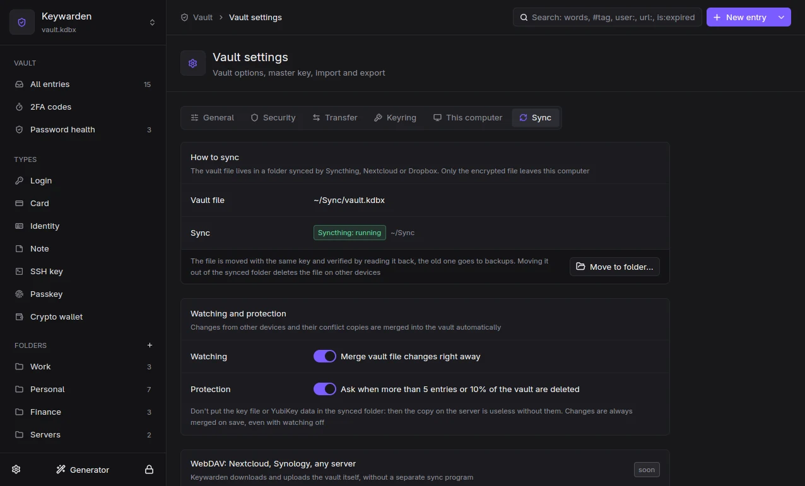

Documentation
Everything you need to install Keywarden, move your passwords in and use it every day.
Overview
Keywarden has four parts that you install together:
keywardend, the daemon. It opens your.kdbxfile, keeps it unlocked in memory, saves changes, locks itself, runs the SSH agent and talks to the browser.keywarden-ui, the main window. With--launcherit is the quick search box you call with a hotkey.kw, the command line client: search, copy, add, 2FA, import, everything scriptable.keywarden-hostand the browser extension: the extension talks to the host, the host forwards encrypted messages to the daemon.
All clients talk to the daemon over a local socket (Linux, macOS) or a named pipe (Windows). The daemon accepts only processes of your own user. If the daemon is not running, the window starts it for you.
Install
Download the archive for your system from the latest release. Check it against SHA256SUMS if you like.
tar xzf keywarden-*-linux-x86_64.tar.gz
cd keywarden-*-linux-x86_64
./install.shThe script needs no root. It puts the binaries in ~/.local/bin, installs a systemd user service for the daemon and starts it, adds a desktop entry and registers the browser host for Firefox. Chromium-based browsers need the extension id, see Browser extension.
Optional packages: wtype (autotype on Wayland) or xdotool (autotype on X11).
Unpack keywarden-*-windows-x86_64.zip to a folder you keep, for example %LOCALAPPDATA%\Programs\Keywarden, and run keywarden-ui.exe. It starts the daemon on demand.
The binaries are not signed yet, so SmartScreen asks once: choose "More info", then "Run anyway".
Register the browser host from that folder:
.\kw.exe browser-setuptar xzf keywarden-*-macos-arm64.tar.gz
cd keywarden-*-macos-arm64
xattr -dr com.apple.quarantine .
./keywarden-uiThe builds are for Apple Silicon and are not notarized yet, hence the xattr step. Then register the browser host with ./kw browser-setup.
From source
Rust 1.92 or newer. On Linux you also need the GPUI libraries (libxkbcommon, wayland, vulkan, fontconfig).
git clone https://github.com/onokashino/keywarden
cd keywarden
cargo build --release -p keywarden-daemon -p keywarden-cli -p keywarden-host -p keywarden-uiUpdates
The package channels go live with the first release.
- Arch Linux:
paru -S keywarden-bin(AUR), updated with the rest of the system. - macOS:
brew install onokashino/tap/keywarden, thenbrew upgrade. No quarantine step needed. - Windows:
winget install onokashino.Keywarden, thenwinget upgrade. - Anywhere: turn on Settings, This computer, Updates. Once a day Keywarden asks GitHub for the latest release (nothing else is sent) and tells you when a new version is out. It is off by default.
The browser extension from a store updates itself.
Your first vault
Start keywarden-ui. The first screen offers two paths:
- Open an existing
.kdbxfrom KeePassXC, KeePassDX, KeePassium or KeePass. Nothing is converted: the file stays readable by those apps. - Create a new vault: pick a place (a synced folder is a good idea), set a master password, optionally add a key file or YubiKey.
The same from the terminal:
kw new ~/Sync/passwords.kdbx # create
kw unlock --db ~/Sync/passwords.kdbx # open; the path is rememberedComing from another manager? See Import: Bitwarden, 1Password, Proton Pass, Chrome, Firefox and others.
Unlocking

A vault can be protected by a master password, a key file, a YubiKey (HMAC challenge-response, the same slots as KeePassXC) or any combination. All of them are set in Settings, Security, where you can also change them later. Key files are created in the KeePassXC format.
The vault locks itself after a period of inactivity, when the screen locks and before the computer sleeps. Lock it by hand with Ctrl+L in the window or kw lock.
Main window

The sidebar has the vault sections (all entries, 2FA codes, password health, recycle bin), types, folders and tags. Drag entries onto a folder or a tag to move or tag them; the "+" next to Folders and Tags creates a new one.
Entry types: login, card, identity, note, SSH key, passkey and crypto wallet. Each type shows its own fields, but underneath it is a normal KeePass entry, so other KeePass apps still see every field. You can add your own fields, hidden fields, attachments and an expiry date to any entry; every change goes to the entry history, and any old version can be restored.

Search
The search box understands a small query language. Words are matched fuzzily against title, username, URL and tags.
| Query | Finds |
|---|---|
github | entries matching "github" anywhere |
#work or tag:work | entries with the tag |
user:octo url:gitlab title:bank notes:pin group:Finance | a match in one field |
pass:1234 | entries whose password contains the text |
is:expired is:otp | expired entries, entries with 2FA |
-old | excludes entries matching "old" |
"exact phrase" /regex/ | a phrase, a regular expression |
Keyboard shortcuts
| Keys | Action |
|---|---|
| Ctrl+F | search |
| Ctrl+N | new entry |
| Ctrl+E · Ctrl+S · Esc | edit · save · cancel |
| Ctrl+D · Shift+Del | duplicate · delete |
| Ctrl+Shift+C · Ctrl+U · Ctrl+T | copy password · username · 2FA code |
| Ctrl+J / Ctrl+K | next / previous entry |
| Alt+↑ / Alt+↓ | previous / next sidebar section |
| Ctrl+G | password generator |
| Ctrl+Tab | switch to the next open vault |
| Ctrl+, | settings (Alt+1..Alt+6 switch tabs) |
| Ctrl+L | lock |
Launcher

The launcher is a search box over all windows. Type a few letters, then:
- Enter copies the password, Ctrl+U the username, Ctrl+T the 2FA code;
- Esc closes it. If the vault is locked, the launcher asks for the master password first.
The copied value is hidden from clipboard history and cloud clipboard and is cleared after 30 seconds, but only if the clipboard still holds it. With several vaults open, the launcher searches all of them.
Binding a hotkey
The launcher is the command keywarden-ui --launcher. Bind it to a key in your system:
Copy dist/niri/keywarden.kdl next to your niri config and add include "keywarden.kdl". It binds:
Mod+Shift+P { spawn "keywarden-ui" "--launcher"; } // launcher
Mod+Shift+A { spawn "kw" "autotype"; } // autotype
Mod+Shift+Alt+L { spawn "kw" "lock"; } // lockGNOME: Settings, Keyboard, View and Customize Shortcuts, Custom Shortcuts, add keywarden-ui --launcher.
KDE Plasma: System Settings, Shortcuts, Add New, Command or Script.
Sway: bindsym $mod+Shift+p exec keywarden-ui --launcher
Create a shortcut to keywarden-ui.exe on the desktop or in the Start menu, open its Properties, set the target to keywarden-ui.exe --launcher and choose a key in the "Shortcut key" field, for example Ctrl+Alt+K.
In the Shortcuts app create a shortcut with the "Run Shell Script" action /path/to/keywarden-ui --launcher, then assign it a keyboard shortcut in its details.
Settings, This computer, shows the exact instructions for the system you are on.
Browser extension
The extension fills logins, picks an account when there are several, fills 2FA codes, offers to save new and changed passwords and suggests a generated password on sign-up forms. It never fills invisible fields or frames.
Install
- Install the extension. Until it is in the stores, use the zip from the release: in Chromium-based browsers open
chrome://extensions, turn on Developer mode and load the unpacked folder; in Firefox openabout:debuggingand load it as a temporary add-on. - Register the host so the browser can reach Keywarden. The Linux installer does it; otherwise run
kw browser-setup. For Chromium-based browsers pass the extension id shown onchrome://extensions:kw browser-setup --chrome-id <id>. - Click the Keywarden icon in the toolbar and press Connect. Confirm in the Keywarden window.
Confirmations

The first time a site asks for a login, Keywarden shows a confirmation over all windows: Enter allows once, Ctrl+Enter always for this site, Esc denies. Sites are matched by registrable domain using the Public Suffix List, so login.example.com and example.com share logins but example.co.uk and other.co.uk do not.
The browser and Keywarden use an encrypted channel (the same crypto_box scheme as KeePassXC-Browser); the host in between only forwards opaque messages. Every automatic behavior can be turned off in the extension settings.
Shortcut in the browser: Ctrl+Shift+L fills the login on the current page.
Passkeys
When a site offers to create a passkey, the extension handles it and stores the key in your vault in the KeePassXC format (KPEX_PASSKEY_* fields), so KeePassXC can use the same passkeys. Signing in with a passkey asks for your confirmation like any other login. Keys use ES256, which nearly every site requires; for anything else the browser's own WebAuthn takes over.
2FA codes

The 2FA codes section works like an authenticator app: live codes with a countdown, the next code shown near the end of a period, click to copy.
- Add a code from a secret, an
otpauth://link, a QR in the clipboard or a QR image. Take a screenshot of the QR with Win+Shift+S on Windows or Cmd+Ctrl+Shift+4 on macOS, then add it from the clipboard. - Show a QR to move a code to your phone.
- Import and export
.2fasbackups (unencrypted ones). - Steam Guard codes and the old KeePass
TOTP Seedfields are understood.
kw totp github -c # copy the current code
kw otp qr github # show the QR in the terminalAutotype
Autotype types into the active window: by default username, Tab, password, Enter. An entry can have its own sequence in KeePass syntax, like {USERNAME}{TAB}{TAB}{PASSWORD}{ENTER}, and window associations that pick the right entry by window title. Keywarden checks that the focused window has not changed before typing.
kw autotype # entry for the active window
kw autotype github # a specific entry| System | How it types |
|---|---|
| niri | wtype, the active window comes from niri |
| Sway, other wlroots | wtype; pick the entry in the launcher |
| X11 | xdotool |
| GNOME on Wayland | not possible: GNOME does not let apps type into other windows |
| Windows | SendInput |
| macOS | needs the Accessibility permission, and Screen Recording to read window titles |
SSH agent
Keywarden is an SSH agent: keys live in entries of type SSH key, the agent offers them while the vault is unlocked and forgets them when it locks. The private key never touches the disk. Everything lives on the Settings, SSH tab: agent status and a Connect to all programs button on top, keys still sitting on disk below, then behavior. Every part can be turned off there.
Get a key in
- Create one: New entry, SSH key, the Create tab. Algorithm: Ed25519 (recommended), ECDSA P-256, or RSA 4096 for old servers. You get the key and its public key with Copy, Add to GitHub and GitLab buttons. From the terminal:
kw ssh-generate --title GitHub --host github.com(-t ecdsa,-t rsa). - Add an existing one: the Add existing tab lists keys in
~/.sshthat are not in the vault yet, one click to pick. You can also choose a file or paste the key text; a key with a passphrase asks for it. Orkw ssh-import ~/.ssh/id_ed25519 --host github.com. - Move everything from ~/.ssh: the Keys on disk card on the SSH tab, Move to the vault…: tick the keys you want and choose whether to delete the private files (the
.pubfiles stay). Orkw ssh-migrate --import [--delete].
Works for every app
Press Connect to all programs (or run kw ssh-setup): Keywarden puts SSH_AUTH_SOCK into the session environment, so ssh, git, IDEs and git clients see the agent after the next login. On Linux this is ~/.config/environment.d, on macOS a LaunchAgent, on Windows the user environment. Settings shows whether it is active or another agent (like GNOME's gcr-ssh-agent) holds the variable. In terminals that are already open:
# bash, zsh
eval "$(kw ssh-env)"
# fish
kw ssh-env | source
# PowerShell
kw ssh-env | Invoke-ExpressionThe right key for each server
Put the server into the key's Host field (github.com, git@host, ssh://user@host:2222, several separated by commas) and turn on Servers in ssh (kw ssh-setup --hosts). Keywarden keeps ~/.ssh/keywarden/config with IdentitiesOnly yes for each host and includes it from ~/.ssh/config with one line. ssh then offers exactly one key instead of trying them all, so "Too many authentication failures" goes away.
SSH servers in the vault: settings travel to every computer
An SSH server entry holds what usually lives in ~/.ssh/config: the address (user@host:port), which vault key to log in with, ProxyJump, port forwarding (8080, 5432:db:5432), any other ssh_config lines separated by ;, and a port knocking sequence. The entries sync with the vault, and with Servers in ssh on, Keywarden writes them as Host blocks into ~/.ssh/keywarden/config, so ssh prod, scp, rsync, git and IDEs see them as ordinary hosts. Your ~/.ssh/config stays as it is (apart from one Include line), and when a name exists in both, the vault entry wins.
To move what you already have: the Servers from ~/.ssh/config card on the SSH tab (the window shows which folder and key each host gets; untick what you do not need), or kw ssh-import-config. Every Host without wildcards becomes an entry in the "SSH" folder, with the same automatic subfolders as kw ssh. An IdentityFile that is already in the vault (matched by public key) becomes a link to that entry; otherwise the IdentityFile line stays among the other lines. Hosts imported earlier are skipped.
Port knocking. Put the ports into the Port knocking field: 7000 8000:udp 9000 (tcp unless :udp). Keywarden adds Match originalhost prod exec "kw knock prod" to the config, so ssh knocks by itself before connecting, for scp and rsync too. The sequence stays encrypted in the vault and is never written to files; while the vault is locked, no knock happens. You can run kw knock prod by hand, and kw ssh knocks by itself even with Servers in ssh off.
Locked vault
When ssh needs a key and the vault is locked, Keywarden shows its unlock window; after you unlock, git push continues by itself.
Confirmations
A key can ask before every use. The window says where you are signing in, for example "Signing in to github.com with GitHub" (OpenSSH 8.9+), warns when the request came through agent forwarding, and offers Allow for 15 min so a series of git fetch does not ask each time. Locking the vault cancels that.
Sign git commits
The Sign git commits and tags with this key switch on an SSH key entry (or kw ssh-git-sign GitHub) sets up git to sign with SSH through the agent; GitHub and GitLab show the commits as Verified. Turning it off removes the settings again.
Pick a server in the terminal: kw ssh
kw ssh opens two panes in the terminal: folders on the left, hosts on the right, details of the selected one below (key, ProxyJump, command). Vault folders are used as they are; hosts from ~/.ssh/config sort themselves by a shared name prefix (prod-api and prod-db land in "prod") or by domain. kw ssh never reads private keys. Keys: Enter connect in this terminal, o open in a new window, s sftp, f port forward, c copy the command, e and n edit or add an address of a vault key, / search all folders, ? all keys. kw ssh prod connects straight away when there is one match; kw ssh --list prints the list for scripts. If the vault is locked, kw ssh asks for the master password.
Keywarden SSH / search
╭ Folders ─────────────────╮╭ prod ───────────────────────────────╮
│◆ All hosts 9 ││› prod-api deploy@10.0.1.5 │
│• Work 2 ││ prod-db root@10.0.1.9:2222 │
│▾ ~/.ssh/config 7 ││ │
│ prod 2 ││ │
│ web 3 ││ │
╰──────────────────────────╯╰────────────────────────────────────╯
╭────────────────────────────────────────────────────────────────╮
│prod-api deploy@10.0.1.5 │
│key: id_work • via bastion │
│~/.ssh/config / prod, read only • ssh prod-api │
╰────────────────────────────────────────────────────────────────╯
Enter connect o new window c command / search ? all keysConnect from the launcher
Search for an SSH key with a host and press Enter: a terminal opens with ssh to that server. Keywarden finds ghostty, kitty, foot, alacritty, WezTerm, GNOME Terminal, Konsole or xterm (Terminal on macOS, Windows Terminal on Windows); pick another one on the SSH tab, Terminal row.
ed25519, ECDSA and RSA keys are supported; entries keep KeeAgent settings, so KeePassXC sees the same keys.
Sync

Keywarden syncs through files. Put the vault into a folder synced by Syncthing, Nextcloud, Dropbox or anything else, and open the same file on your phone with KeePassDX (Android) or KeePassium (iOS).
When the file changes on disk while the vault is open, Keywarden merges it entry by entry: newer edits win, deletions are respected, nothing is silently lost. Syncthing conflict copies are merged and moved to backups automatically, and you get a notification. If a merge would delete many entries at once, Keywarden asks first.
Import and export
From Settings, Transfer or the command line:
- Import: Bitwarden (JSON and CSV), 1Password, Proton Pass, Chrome, Firefox and KeePassXC CSV, another
.kdbxor old.kdb, 2FAS backups. You get a report: what was moved and what needs a manual look. - Export: CSV in the KeePassXC format, a copy of the vault with a different password, a
.2fasbackup of your codes. - Merge another copy of the same vault.
kw import bitwarden_export.json
kw export ~/backup.kdbx -f kdbx
kw merge ~/old-laptop.kdbxSeveral vaults
Each vault gets its own daemon, called a profile. Switch between open vaults with the selector at the top of the sidebar or Ctrl+Tab; the launcher searches all of them.
kw profile-add work ~/Work/work.kdbx
kw --profile work unlock
kw profilesOn Linux each profile is a systemd unit: systemctl --user start keywardend@work.
Backups and safety
- Before every save the previous file is kept as a backup (the last few are kept).
- A save goes to a temporary file, which is decrypted again and compared with what is in memory, then atomically replaces the original.
- If another app changed the file since it was opened, Keywarden merges instead of overwriting.
- Old KDBX 3.1 and 4.0 files are upgraded to 4.1 on the first save, which KeePassXC 2.7+ and current mobile apps read.
Secret Service (Linux)
Keywarden can replace gnome-keyring or KWallet as the system keyring (org.freedesktop.secrets): apps that store tokens in the keyring then keep them in your vault, in a separate folder, and Keywarden asks before an app reads a secret.
- In Settings, Keyring press "Move from the current keyring".
- Disable the secrets component of gnome-keyring and restart
keywardend. Keywarden never takes the name over by force.
kw command line
kw --help and kw <command> --help describe every option. The most used commands:
kw unlock [--db PATH] [-k KEYFILE] kw lock kw status
kw search QUERY kw show QUERY [-r]
kw copy QUERY [-f password|username|totp|FIELD]
kw totp QUERY [-c] kw generate [-l 24] [-p -w 6] [-c]
kw add -t login|card|identity|note|ssh-key|ssh-host --title ...
kw edit ... kw rm ... kw dup ... kw mv ... kw tags
kw groups kw mkgroup A/B kw attach / kw attachment
kw health [--breaches] kw icon QUERY
kw import FILE kw export PATH [-f csv|kdbx|2fas] kw merge FILE.kdbx
kw ssh-import FILE [--confirm] kw ssh-env
kw ssh-import-config kw knock NAME
kw otp set|scan|qr kw autotype [QUERY]
kw passwd [-k KEYFILE] kw keyfile PATH kw db-settings [--tune]
kw profiles kw profile-add NAME FILE.kdbx kw --profile NAME ...
kw browser-setup [--chrome-id ID] kw new PATHPlatform support
| Feature | Linux | Windows | macOS |
|---|---|---|---|
| Window, launcher, kw, extension, sync | Yes | Yes | Yes |
| Launcher over all windows | Yeslayer-shell on niri, Sway, KDE; centered window elsewhere | Yes | Yes |
| Clipboard hidden from history | Yes | Yes | Yes |
| Autotype | Mostnot GNOME on Wayland | Yes | Yes |
| Lock on screen lock and sleep | Yessystemd-logind | Yes | Yes |
| SSH agent | Yes | Yes | Yes |
| YubiKey | Yes | Betavia system HID | Betavia system HID |
| Tray icon | YesKDE, waybar, noctalia; GNOME needs the AppIndicator extension | Yes | Not yet |
| Start at login | Yessystemd service | YesWindows startup | YesLaunchAgent |
Security model
What Keywarden protects against: other users on the machine, websites, other browser extensions, malware that reads files but cannot run as you, clipboard history and cloud clipboard, crash dumps, swap, and data loss from crashes or sync conflicts.
- The vault file uses KDBX 4 encryption (AES-256 or ChaCha20, Argon2 key derivation tuned to your computer).
- Decrypted data lives only in the daemon. Secrets are zeroized after use and never printed to logs.
- The daemon disables core dumps and debugger attachment (
PR_SET_DUMPABLEandRLIMIT_COREon Linux,PT_DENY_ATTACHon macOS, no WER dumps on Windows) and locks its memory where allowed. - Local sockets are
0600and check the peer user id; Windows named pipes compare the client's user SID and refuse remote clients. - The browser channel is encrypted end to end; each new site is confirmed by you.
- Network access happens only on request: a Have I Been Pwned check with k-anonymity (only 5 characters of the SHA-1 hash leave your computer) and fetching a site icon.
What it does not protect against: malware already running as your user while the vault is unlocked. It can read the screen, the keyboard and process memory; no local password manager can stop that. Lock the vault when you step away.
Found a problem? Please report it privately, see SECURITY.
Local API
A separate socket lets assistants and scripts work with the vault without ever seeing a secret: list entries, put a secret into the clipboard, or create an entry from the clipboard. The protocol is one JSON line per request; see docs/local-api.md.
FAQ
Can I keep using KeePassXC?
Yes. Both apps read and write the same file, even at the same time: Keywarden merges changes KeePassXC makes while the vault is open.
Where are settings stored?
Linux: ~/.config/keywarden. macOS: ~/Library/Application Support/Keywarden. Windows: %APPDATA%\Keywarden.
Is there a mobile app?
Not yet. Use KeePassDX on Android or KeePassium on iOS with the same synced file.
How do I change the language?
Settings, General, Interface language: system default or any available language. The window switches at once; the background service follows after a restart. The browser extension follows the browser language.
Can I help translate Keywarden?
Yes, please. Any language can be added without touching the code, and a partial translation already helps: whatever is not translated yet appears in English. See docs/translating.md.